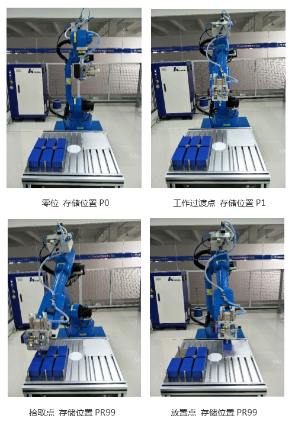

6.2码垛编程与操作
6.2.4示教编程
本项目要实现机器人完成六个物料的搬运和码垛。
1、变量说明
表6-2 变量说明
| 序号 | 变量 | 说明 |
|---|---|---|
| 1 | R[0] | 计数，用于判断执行次数 |
| 2 | R[1] | 中间变量 |
| 3 | R[2] | 中间变量 |
| 4 | R[3] | 中间变量 |
| 5 | R[4] | 中间变量 |
| 6 | R[5] | 中间变量 |
| 7 | P[0] | 零点位置数据 |
| 8 | P[1] | 工作过渡点位置数据 |
| 9 | PR[99] | 示教拾取点位置数据 |
| 10 | PR[98] | 示教放置点位置数据 |
| 11 | PR[0] | 中间变量 |
| 12 | PR[10] | 中间变量 |
2、程序
（1）主程序
表6-3 主程序
| 序号 | 程序 | 说明 |
|---|---|---|
| 1 | R[0]=0 | 计数，用于判断执行次数 |
| 2 | LOOKAHEAD=ON | |
| 3 | J P[0] 100% CNT100 | 零位 |
| 4 | J P[1] 100% CNT10 | 工作过渡点 |
| 5 | LBL[1] | |
| 6 | CALL zcx 1 | |
| 7 | R[0]=R[0]+1 | |
| 8 | IF R[0]< 6,JMP LBL[1] | 判断是否搬运完所有物料 |
| 9 | J P[1] 100% CNT10 | 工作过渡点 |
| 10 | J P[0] 100% FINE | 零位 |
| 11 | LOOKAHEAD=OFF | |
| 12 | END |
（2）子程序
表6-4 子程序
| 序号 | 程序 | 说明 |
|---|---|---|
| 1 | R[1]=R[0]MOD3*3 | |
| 2 | R[2]=R[0]DIV3 | |
| 3 | R[3]=65*R[1] | 拾取点Y方向偏移值 |
| 4 | R[4]=125*R[2] | 拾取点X方向偏移值 |
| 5 | PR[0]=PR[99] | 计算拾取点位置 |
| 6 | PR[0,0]=PR[0,0]+R[4] | |
| 7 | PR[0,1]=PR[0,1]+R[3] | |
| 8 | PR[10]=PR[0] | |
| 9 | PR[0,2]=PR[0,2]+60 | 计算拾取点正上方位置 |
| 10 | J PR[0] 50% CNT10 | 拾取点正上方 |
| 11 | L PR[10] 300mm/sec FINE | 拾取点 |
| 12 | Y[1,2]=ON | 吸取工件 |
| 13 | WAIT 0.3sec | 等待吸取到位 |
| 14 | L PR[0] 300mm/sec CNT10 | 拾取点正上方 |
| 15 | R[3]=60*R[1] | 放置点Y方向偏移 |
| 16 | R[4]=35*R[2] | 放置点Z方向偏移 |
| 17 | PR[0]=PR[98] | 计算放置点位置 |
| 18 | PR[0,1]=PR[0,1]+R[3] | |
| 19 | PR[0,2]=PR[0,2]+R[4] | |
| 20 | PR[10]=PR[0] | |
| 21 | PR[0,2]=PR[0,2]+60 | 计算放置点位置正上方 |
| 22 | J PR[0] 50% CNT10 | 放置点正上方 |
| 23 | L PR[10] 300mm/sec FINE | 放置点 |
| 24 | Y[1,2]=OFF | 释放工件 |
| 25 | WAIT 0.3sec | 等待释放到位 |
| 26 | L PR[0] 300mm/sec CNT10 | 放置点正上方 |
| 27 | END |
3、目标点示教
手动界面中将工具坐标系设置为工具0，将工件坐标系设置为工件0。依次手动操作机器人到目标点位置并记录位置数据。

图6-7
视频 6-1 码垛_自动运行